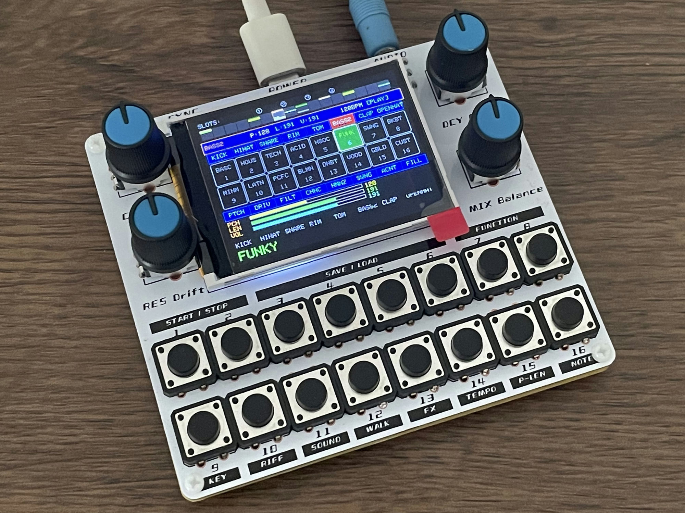
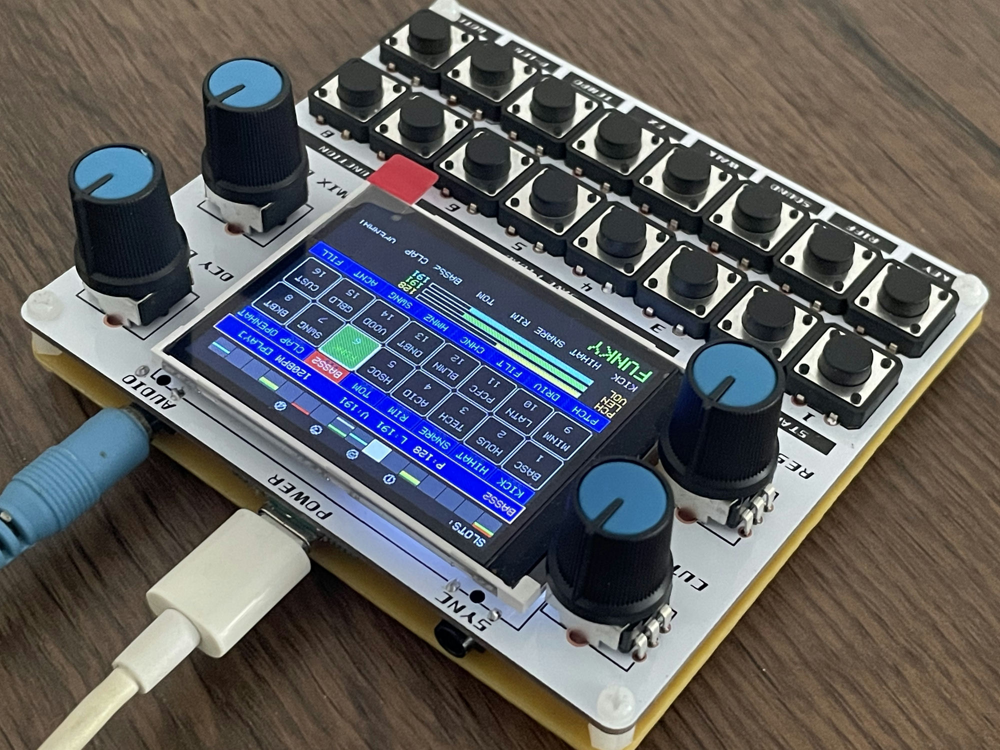
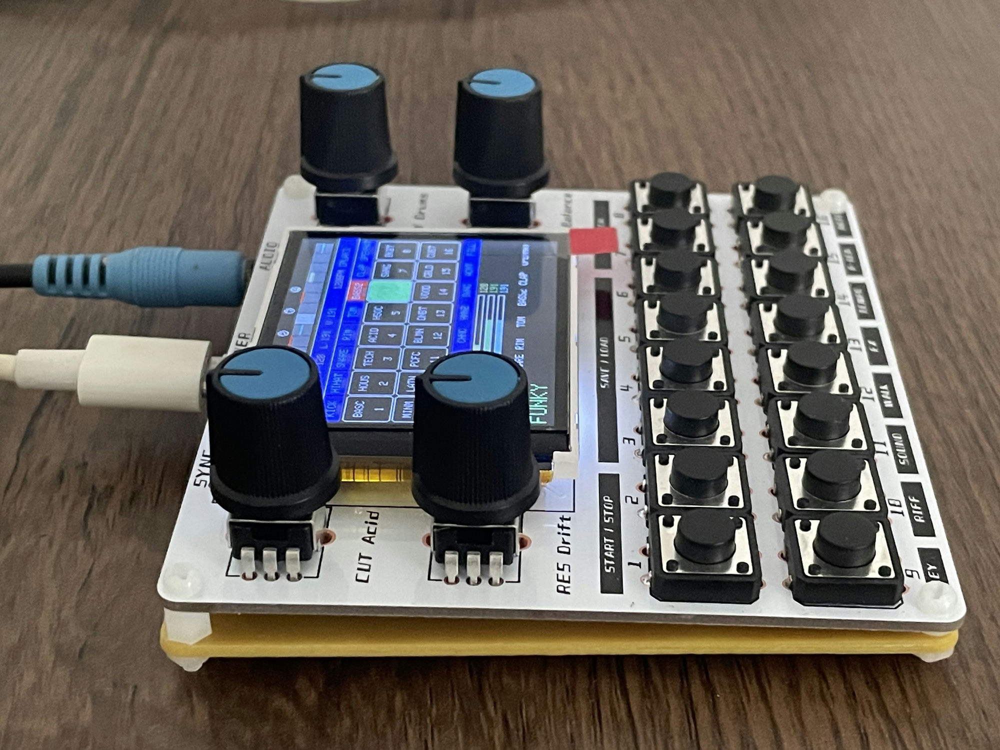

AZSMZ AD-5 is a dual-core, three-in-one instrument built on RP2040 (Raspberry Pi Pico) with the Mozzi audio library: a 16-step classic 303-style acid bass sequencer, a second independent synth voice DRIFT (16 engines, its own pattern), and an 8-voice drum machine with 16 preset patterns plus one user-editable pattern. All three engines can play at once, each with independent start/stop; the mix is set by the physical MIX Balance pot plus MIX EDIT digital trim. The hardware is an original AZSMZ design; the firmware is a GPL-3.0 modified version of Acid Drip. Power is USB-C 5 V only; there is no battery holder, battery connector or charging circuit — unplug to power off.
| Part | Description | Hardware | Spec |
|---|---|---|---|
| Acid bass synth | 16-step acid sequencer, classic 303 style | MCU | RP2040 dual-core (Pico) |
| DRIFT synth | Second independent voice, 16 engines | Display | 2.4" ST7789V 320×240 TFT |
| Drum machine | 16 presets + 1 user pattern, 8 voices | Pads | 16× 12×12 mm tactile switches (2 rows × 8) |
| Three engines at once | Independent start/stop, drift-free sync | Knobs | 4× 10K (CUT / RES / DCY analog, MIX balance) |
Top row = steps 1–8; bottom row = steps 9–16, printed with their FUNC-mode names. The top row is also labeled: pad 1 START / STOP, pads 3–4 SAVE / LOAD, pads 7–8 FUNCTION A / B. Pad 16 is printed NOTE; the screen shows PAT> (playback order).
Display TFT : SCK=GP6 SDA=GP7 RST=3V3 DC=GP10 CS=GP13 (AZSMZ board: RST to 3V3, GP8 for sync)
Knobs : CUT=GP26 RES=GP28 DCY=GP27 (MIX Balance is analog, not ADC)
Sync : IN/OUT=GP8 → SYNC jack (see sections 4 and 8)
Audio : Acid=GP15 Drums+DRIFT=GP2 → MIX Balance → shared AUDIO jack
Pad GPIO : top row 1-8 → GP14 GP12 GP11 GP16 GP17 GP19 GP20 GP21
bottom row 9-16 → GP0 GP1 GP3 GP4 GP5 GP9 GP18 GP22 (pad 14 = GPIO9)
| Signal / pin | Output path |
|---|---|
| Acid → GP15 | 10K series into the node; 10nF + 3.3K to ground; 10µF DC block → AUDIO jack (details in 12.1) |
| Drums + DRIFT → GP2 | Through the MIX Balance pot (10K) into the same node; DRIFT and drums mix additively |
| Sync → GP8 | Dedicated sync jack; choose input/output direction in the boot menu (section 8) |
The boot gesture selects the mode and sync direction (the pad 1/2 direction is stored in EEPROM and restored on every boot): hold nothing = the last saved sync direction (if none was saved: normal boot on the Acid screen, with drums + DRIFT audio on GP2); hold pad 14 while powering on = the cyan SYNC SETUP menu appears; press pad 1 or pad 2 to choose the direction.
| Pad | Direction | Description |
|---|---|---|
| pad 1 | Sync in | External clock drives the unit; while playing, the top right shows SYNC IN (cyan) |
| pad 2 | Sync out | The unit is the master clock and sends pulses; while playing, SYNC OUT (magenta) |
| Action | Result |
|---|---|
| Short-press a step pad (1–16) | Toggle the step on/off |
| Long-press ×1 | Toggle accent |
| Long-press ×2 | Toggle glide |
| Hold a step pad + turn CUT | Set that step's pitch (scale-quantized) |
| Combination | Function |
|---|---|
| 1+2 | Play / stop |
| 1+2 (hold 0.5 s) | Factory reset the current engine (Acid or DRIFT); in drum mode, hold 1 s to reset the drums |
| 7+8 | Enter / leave FUNC mode |
| 9+10 (hold 0.5 s) | Switch to drums (or back to Acid/DRIFT) |
| 9+10+11 (hold 0.5 s) | Acid ↔ DRIFT (V5) |
| 1+9 (hold 1 s) | Filter SETTINGS (Acid screen only; see 5.9) |
| 11+12+13+14 (1 s) | Toggle the Acid Walks easter egg |
| 12+13 | Enter / leave chain-build mode |
| 15+16 (1 s) | Toggle MIX EDIT mode |
| Action | Function |
|---|---|
| Press 3/4/5/6 | Load slot 1/2/3/4 |
| Hold 3/4/5/6 for 1 s | Save to slot 1/2/3/4 |
| Hold 3+4+5+6 for 1 s | Clear all 4 slots (Acid screen: acid part; drum screen: drum part) |
Chain the 4 save slots into a sequence of up to 16 segments, in any order, with repeats:
| Key | Function | Options |
|---|---|---|
| 9 | KEY root | C / D / Eb / F / G / Ab / Bb / B |
| 10 | RIFF preset | DFLT / SQNCE / FUNK / MINI / JUMP / RAVE / SYNC / DARK |
| 11 | SOUND | SAW / SQR / SINE / PWM / CSAW / CSQR / CSIN / SUBSQ |
| 12 | WALK interval walk | OFF / 4TH / OCTWAVE / 5TH / BOUNCE / MIN3RD / VAMP3 / RANDOM |
| 13 | FX assignment | Enter FX sub-mode (5.6) |
| 14 | TEMPO | Preset BPM: 100/110/120/128/133/138/145/160; tap repeatedly to tap tempo |
| 15 | P-LEN pattern length | 1 / 2 / 3 / 4 / 6 / 8 / 12 / 16 |
| 16 | NOTE playback order (screen PAT>) | FWD / CW / ALT / REV / SKIP2 / SKIP3 / PING / RND |
| Knob | Controls |
|---|---|
| CUT | Acid |
| RES | DRIFT |
| DCY | Drums |
V4's Accent Edit is replaced by MIX EDIT; the accent sound is now fixed.
Hold 11+12+13+14 for 1 s: enter the hidden mode with 8 classic acid/house presets, each with its own root, tempo, length and sound; choose with pads 1–8. FUNC/FX/drums still work; press the same combination again to exit.
On the Acid screen, hold 1+9 for 1 s: the three bars become DPTH (CUT; sweep depth 0–255), TONE (RES; high-pass brightness 110–190) and SPD (DCY; sweep speed 2–20, higher = slower/longer). Hold 1+9 again to exit and save to EEPROM; factory values are 90 / 170 / 5. Each pot must move before it takes over (anti-jump). These are global settings, not saved per slot. The drum screen ignores 1+9 — its bars are PCH / LEN / VOL.
An independent second voice: its own 16-step pattern, 16 engines, and its own FUNC page. Its digital output is mixed with the drums on GP2; turn the MIX Balance away from the ACID end to hear it clearly.
| Current screen | Hold 9+10 (0.5 s) | Hold 9+10+11 (0.5 s) |
|---|---|---|
| Acid | → Drums | → DRIFT |
| DRIFT | → Drums | → back to Acid |
| Drums | → back to the last Acid/DRIFT | no action (anti-touch) |
| Key | Function | Options |
|---|---|---|
| 9 | SND1 engine (page 1) | SUBSIN / DTSQR / FMBEL / RINGM / CLICK / FOLDR / PWM / UNISN |
| 10 | SND2 engine (page 2) | SAW / SUBDIV / NOIZ / VOWEL / ARPG / GONG / CRUSH / GATE |
| 11 | FOLW pitch mode | F+8 / F-8 / F+5 / F+3 (follow the last acid note + interval) / FOLW / ARP+ / AR+- / WALK |
| 12 | ECHO delay | OFF / 8D / 1/4 / 4D / 1/2 / 8FB / 4FB / 2FB |
| 13 | VERB reverb | OFF / SML / MED / BIG / HALL / MEDW / BIGW / WASH |
| 14 | PATT pattern save | 8 user slots S1–S8 |
| 15 | EVOL generative evolution | OFF / OCTL / ADD1 / DEEP / STUT / HVY / WILD / MAX |
| 16 | REC knob-motion recording | see 6.4 |
The 16 engines map CUT/RES/DCY differently (roughly octave, character/detune, decay time); the knobs change role with the engine.
Short-press 16 to start recording, short-press again to stop. While recording, turning any knob activates that lane and records one loop, beat by beat; after stopping, the motion plays back automatically each step. Unrecorded knobs remain live. Long-press 16 clears all recordings.
Hold 9+10 for 0.5 s to enter/leave drum mode (from DRIFT, 9+10 also returns to the last engine).
| Pad | Voice | Pad | Voice |
|---|---|---|---|
| 1 | Kick | 5 | Rim / Tom |
| 2 | Closed hat | 6 | Bass 2 |
| 3 | Snare | 7 | Clap |
| 4 | Rim | 8 | Open hat |
| Knob | Function |
|---|---|
| CUT | Pitch (exponential; center = original speed, 64 units = one octave) |
| RES | Decay length (4 ms click to full sample tail) |
| DCY | Volume |
The three bars on the drum screen show the selected drum's PCH / LEN / VOL; the filter bars (CUT / RES / DCY) live on the Acid screen.
| Label | Function | Description |
|---|---|---|
| PTCH | Global pitch | Transposes everything, on top of per-drum pitch |
| DRIV | Drive/saturation | Exponential pre-gain into a hard-knee saturator; at the top it adds bit crush |
| FILT | Bipolar DJ filter | Center = bypass; below center = low-pass sweep; above = high-pass sweep |
| CHNC | Random chance | Center = as programmed; low = thin out hits (keeps the backbone); high = add ghost notes to empty steps |
| HMNZ | Humanize | Random velocity jitter + per-hit timing offset; center = mechanical |
| SWNG | Swing | Delays odd 16th notes by up to 60% of the step interval |
| ACNT | Accent depth | Center = flat; high = accent downbeats; low = accent offbeats (late) |
| FILL | Programmed fill | see 7.4 |
Except FILT and CHNC, all FUNC parameters are saved with the slot.
The last few beats before a section end are taken over by a generated “push” that lands on beat 1 with kick + open hat. Pads 1–4 set the frequency, pads 5–8 the type:
| Pad | Frequency |
|---|---|
| 1 | OFF |
| 2 | Every 16 steps (4-step length) |
| 3 | Every 32 steps (6-step length) |
| 4 | Every 64 steps (8-step length = half bar) |
| Pad | Type / behavior |
|---|---|
| 5 | HATS: closed hats get denser and open up, ending on open hat; kick stays solid |
| 6 | CLAP: clap build + steady half-time kick |
| 7 | SNARE: pure snare rolls, no kick, heavy final hit |
| 8 | KIT: toms descending to snare for the first 70%; clap on beat “1” |
| 1 | BASC · BASIC | 4 | ACID · ACID TRACK | 7 | SWNG · SWING | 10 | LATN · LATIN | 13 | DNBT · DRUM N BASS |
| 2 | HOUS · HOUSE | 5 | HSOC · HI STATE | 8 | BKBT · BREAKBEAT | 11 | PCFC · PACIFIC ST | 14 | VOOD · VOODOO RAY |
| 3 | TECH · TECHNO | 6 | FUNK · FUNKY | 9 | MINM · MINIMAL | 12 | BLMN · BLUE MONDAY | 15 | GBLD · BUILD DOWN |
| 16 | CUST · CUSTOM (user) — see 7.6 | ||||||||
| Action | Function |
|---|---|
| Short-press 16 | Enter custom edit mode (no long press) |
| Short-press 16 while editing | Toggle the current voice on step 16 |
| Turn any knob | Set pitch/decay/volume for the current voice in real time |
| Hold 0.5–1.0 s (while editing) | Switch to the next drum voice |
| Hold 1.0–1.5 s (while editing) | Save and exit |
| Hold 1.5–2.0 s (any state) | Clear the whole custom pattern |
While holding, the bottom legend lights the action that will fire on release. The four steps repeat every 2 s, so if CLEAR lights by mistake, keep holding and release on the next 1s=EXIT+SAVE (3.0–3.5 s) to save and exit safely.
Same as Acid: 7+8 → 3/4/5/6 loads, hold 1 s saves (all three engines). Per-drum settings, global FUNC (except FILT/CHNC), tempo, swing, fill and the selected pattern save with the slot; hold 3+4+5+6 for 1 s on the drum screen to clear the drum part.
Sync uses the dedicated GP8 pin (LCD RST is tied to 3V3, so GP8 is free for sync): choose the direction in the boot menu; the pad 1/2 choice is stored in EEPROM and restored on every boot. Input and output share one jack; only one direction at a time.
| Engine | Gesture |
|---|---|
| Acid / DRIFT | Hold 1+2 for 0.5 s |
| Drums | In drum mode, hold 1+2 for 1 s |
Check these 4 in order:
This firmware includes the display orientation fix (MADCTL 0x40). Garbled/no display: check the TFT wiring and RST — on this board RST must go to 3V3; a fully black screen usually means RST is open or loose. The sync option cannot blank the screen on the AD-5 (only the upstream board, where GP8 is a reset pin, can blank if sync is selected by mistake).
The unit ships with the factory firmware in Firmware/Acid_Drip_Drum_Acid_Drift_V5/. The workflow .github/workflows/build-firmware.yml builds on every push to main and uploads the UF2 as an artifact (name acid-drip-firmware). Download the official build from GitHub Releases; artifacts expire and are not a long-term link.
| Firmware | Build (tested version) | Flash | RAM |
|---|---|---|---|
| Factory | Acid_Drip_V5.uf2 | 154340 bytes (7%) | 57732 bytes (22%) |
| Item | Spec |
|---|---|
| MCU | RP2040 dual-core (Core 0: Mozzi audio + drum mix; Core 1: display + drum sample buffer; FIFO between them) |
| Audio out | Acid GP15 (Mozzi 16.384 kHz); drums + DRIFT GP2 (PWMAudio 488 kHz carrier, avoiding beat between carriers) |
| Sample rate | 16384 Hz |
| Power | USB-C 5 V only; no battery holder, connector or charging circuit; runs only while plugged in; power supply not included |
| Sync | Dedicated GP8, input/output chosen at boot; 1 PPQN, 15 ms pulse; drums/DRIFT stay audible |
| Three-engine sync | Drum and DRIFT steps are driven by the acid sequencer; no drift at any tempo/length |
This manual describes firmware v1.0.0 (2026-11-26). Hardware (schematic, PCB front panel, base plate) is an original AZSMZ design; the firmware is a modified version of Acid Drip, released under GPL-3.0; source and change list: https://github.com/cxandy/Acid_Drip. Upstream project and firmware author: Marcus (lonesoulsurfer); drum engine adapted from DrumKid (Matt Bradshaw); acid engine adapted from Badass Bass; built on the Mozzi audio library. “Acid Drip” is the upstream project name; this is an independent compatible product, not an official product.